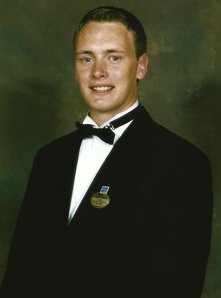

This page is a degustative, montage of my varied, professional history and includes; my work experience, skills and knowledge attained, along with a brief on current and future projects and ambitions.
| Skill set | Level of Excellence |
|---|---|
| Specialist Alkaline, Vegan Chef | ⭐⭐⭐⭐⭐ |
| NLP Master Trainer | ⭐⭐⭐⭐⭐ |
| Sales & Media Marketier | ⭐⭐⭐⭐⭐ |
| Cuisine Photographer | ⭐⭐⭐⭐ |
| Web Designer / Developer | ⭐⭐⭐⭐⭐ |
| Quntum Health Specialist | ⭐⭐⭐⭐⭐ |
| Program or Language | Level of Compitance |
|---|---|
| Advanced HTML & CSS | ⭐⭐⭐⭐⭐ |
| JS, Jquery & Node-JS | ⭐⭐⭐ |
| PHP & Wordpress | ⭐⭐⭐ |
| Bootstrap | ⭐⭐⭐ |
| Office | ⭐⭐⭐⭐ |
| Photoshop | ⭐⭐⭐⭐ |
| Lightroom | ⭐⭐⭐ |
| Ableton | ⭐⭐⭐ |
I started my professional life at 12 working in restaurants in the school holidays and when I was sixteen I trained as a chef in a 5 star hotel. I then went on to cook in a number of local, Kent restaurants, before I became a chef in the merchant navy. After this, my early career as a chef culminated in me working at a specialist diet retreat cooking for patients with addictive food disorders for a top "Harley Street Doctor."
I then decided to take a brake and see the world some more and went to back to sea working for a luxury cruise line around Alaska and the Caribbean. I stared my first contract as a "Bar Steward" and went on to become an "Assistant Cruise Director." I found this period of my life to be incredibly enjoyable and, to this day, I still enjoy life onboard a cruise ship, although, I now prefer the life of a passenger.
After returning from sea I spent the next ten years in sales and marketing, predominately working in London, within a variety of fields including; Technology Sales, and as a "Senior Executive" for a Web Design & Marketing Company, I then went on to gain experience in London working for an, Industry leading, "Contract Research, Pharmaceutical Publication," and then the world's leading, "Personal Performance Promoters" selling global, training courses and seminars for industry leaders, such as; "Antony Robbins & Joseph McClendon, T Harve Ecker & Christopher Howard" to name but a few.
It was at this time that I utilised my contacts within the industry to become a "Master Trainer" of "NLP" "Neuro Linguistic Programming." Whilst living in London I was also volunteering as editor for the UK's Largest personal development charity, producing their monthly digital publication.
For the past ten years I have been residing back in Kent and have, not only returned to my career as a chef, specialising in; "Alkaline, Vegan, Vegetarian & Gluten Free Cuisine," I have also gained & developed a wide variety of skills & Knowledge including; "Web Design, Cuisine Photography, and most recently, Music Production" along with an enhanced, "Quantum Perspective" on health, life, disease &, just about, the complete workings of the, "Entire Universe."
| Time Period | Work Undertaken |
|---|---|
| 2000-2010 | Sales And Marketing LondonDuring this period I gained a wealth of experience in sales and marketing working in positions ranging from Web and Seo sales to Pharmasuitcal publications |
| The table body | with two columns |
| Further Information | |